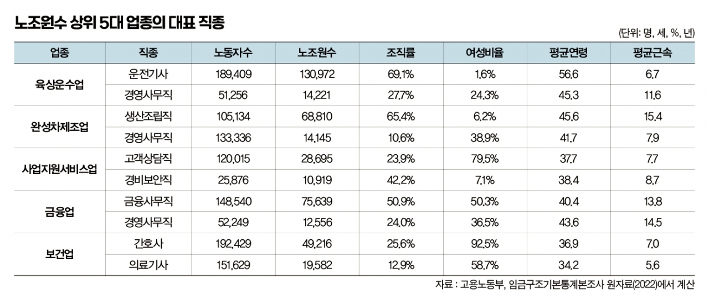
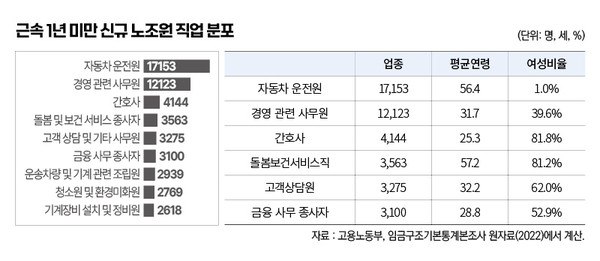

박영삼의 통계로 보는 노동
노조원이 가장 많은 직업은?
‘운전기사 13만명 최대’ 완성차 생산직·콜센터 상담원·은행원·간호사 순
우리나라에서 가장 노조원 비율이 높은 업종과 직업은 무엇일까.
지난해 노조에 새로 가입한 노동자는 어떤 직업에 종사할까? 이런 것들이 궁금해도 노조원에 관한 정보를 업종과 직업 수준에서 상세하게 확인할 수 있는 통계는 거의 드물다.
고용노동부에서 발표하는 노동조합 조직현황은 상급단체와 조직형태별로 노동조합 현황을 알려준다. 하지만 상급단체들이 어떤 산업과 업종에서 노동자를 얼마나 포괄하는지는 알기는 어렵다.
통계청에서 발표하는 경제활동인구 부가조사에서 고용형태별 노동자수와 노조 가입 여부를 확인할 수 있다. 하지만 산업과 직업은 대분류로만 구분하기 때문에 더 이상의 정보를 알기는 어렵다.

@매일노동뉴스 자료사진 <정기훈 기자>
이보다 세밀하게 알 수 있는 통계는 따로 있다. 노동부의 고용형태별 근로실태조사의 임금구조부문 통계가 그것이다. ’임금구조 기본통계’라고도 불리는데 전국 5명 이상 사업체에서 일하는 80만명 이상의 상용노동자 표본을 구축해 매년 6월말 기준으로 산업중분류, 직업중·소분류 수준에서 임금과 근로시간 등을 조사해 발표한다. 여기에 노동조합 가입정보가 포함돼 있다.
지난해 9월부터 임금구조통계 직종정보 추가 제공…노조원 상세 정보 확인도 가능해져

노동부는 그동안 직업소분류 정보를 사무직과 기능직, 조립직, 단순노무직만 제공했다가 지난해 9월부터 전문직과 서비스직, 판매직도 직업소분류 수준까지 구분이 가능하도록 원자료를 공개하기 시작했다. 직업분류의 가짓수는 기존의 124종에서 183종으로 늘어났다. 예를 들면 ‘교육전문가와 관련직’으로만 분류했던 것을 ‘대학교수’와 ‘유치원 교사’로 구분할 수 있게 됐고, ‘보건사회복지 관련직’으로만 표기됐던 것을 ‘의사’와 ‘간호사’ ’의료기사’를 각각 구분할 수 있게 된 것이다. 정부가 이런 노력을 기울이는 이유는 직무와 성과 중심의 임금체계 개편을 추진하는데 필요한 자원이라는 다른 이유가 있지만 어쨌든 임금결정에 영향을 미치는 변수의 하나로 노동조합 가입 여부가 조사에 포함된 덕분에 역으로 노조원의 직업 정보에 관해 더 상세하게 파악할 수 있다.
노동부의 확장된 임금구조 기본통계 원자료로 확인한 우리나라의 73개 산업중분류 업종 가운데 노조원수가 가장 많은 5대 업종은 육상운수업(16만1천명)과 자동차제조업(11만5천명) 그리고 인력공급업 등으로 등록된 사업지원서비스업(10만7천명) 순으로 나타났다. 금융업(10만2천명)과 보건업(9만8천명)이 그 뒤를 이었다. 산업대분류로는 제조업과 공공행정이 가장 조합원이 많은 산업인데 중분류로 내려가면 조금 다른 얼굴을 만나볼 수 있다.
해당 업종에서 가장 많은 노조원들이 분포하는 직업은 육상운수업에서는 운전기사(13만명)와 사무직(1만4천명)이 차지했고, 완성차제조업의 생산조립직(6만9천명), 사업지원서비스업의 콜센터상담원(2만9천명)과 사무직(1만4천명), 경비직(1만1천명)이 대표 직종이었다. 그리고 금융업에서는 금융사무직(7만6천명)과 경영사무직(1만3천명)이 노조원수가 가장 많았고, 보건업에서는 간호사(4만9천명)와 의료기사(2만명)가 노조원의 핵심 직종이다.
1년 새 신규 노조원 가장 많은 직종은?…운전기사 조합원 1만7천명 늘어

최근 새롭게 노조에 가입한 신규 노조원들은 어떤 사람들일까. 이를 추정하는 방법은 조사 시점 기준 근속 1년 미만 노조 가입자가 가장 많은 직종을 확인하는 것이다. 분석 결과 1위를 차지한 것은 운수업의 운전기사로 근속 1년 미만 노동자 가운데 1만7천명이 노조에 가입한 것으로 나타났다. 그 뒤를 이어 경영사무직이 1만2천명에 달했는데 이들은 다양한 업종에 고루 분포했다. 그리고 보건업에서 간호사가 4천명 이상 노조에 가입했고, 사회복지서비스업의 요양보호사 등 돌봄서비스 종사자가 3천명 규모로 뒤를 이었다. 콜센터 상담원과 금융사무직도 3천명 이상 새롭게 노조에 가입한 직종이었다. 콜센터상담원은 위탁계약을 맺은 용역업체에서 일하는 형태로 사업서비스업종 소속이 많았고 금융사무직은 금융업과 보험업에 취업한 사람들이 함께 있었다. 청소환경미화원도 대표적인 신규 노조가입 직업에 포함됐다. 끝으로 기계장비설치정비원이 직업 순위에 포함됐는데 이들은 건축업에서 일하는 비중이 높았다.
여성·청년·고령층 노조 가입 확대 주목해야
새로 노조에 가입한 노동자들의 가장 두드러진 인적 특성은 ’여성·청년·고령’이다. 기존에 비해 여성 비중이 상당히 높은 직종이 특징적이고, 사회에 갓 진출하는 젊은층과 새로운 직업으로 재진입하는 고령세대가 함께 섞여 나타난다는 점도 인상적이다. 이런 사람들이 노동조합의 새로운 구성원으로 유입되는 것이다.
하지만 주의할 점도 있다. 해당 통계 조사대상에서 빠지는 노동자가 상당히 많기 때문이다. 중앙정부와 지방정부 공무원과 국공립 교육기관이 빠지고, 가사서비스업과 국제외국기관도 제외된다. 5명 미만 사업체와 비상용직도 제외된다. 임금과 근로시간을 제대로 기록하고 관리하기 어려운 사업체는 빠지고 공무원과 교사는 민간부문과 다른 원리로 임금이 결정된다고 봐서 조사대상에서 제외한 것이다. 비록 여러 중요한 정보는 손실됐지만 노조에 대해 알고 싶은 다른 정보를 확인할 수 있는 길 하나가 추가된 셈이다.
고려대 노동문제연구소 노동데이터센터장 (youngsampk@gmail.com)